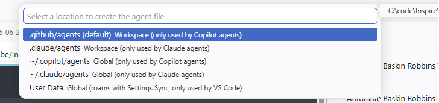
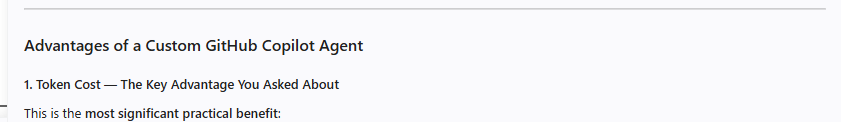
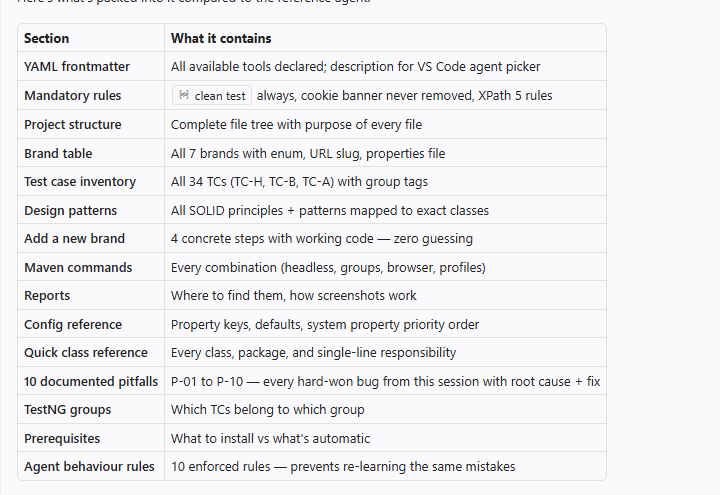
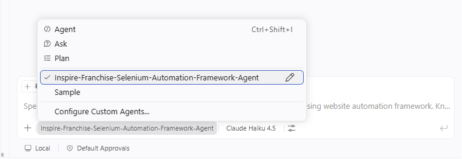
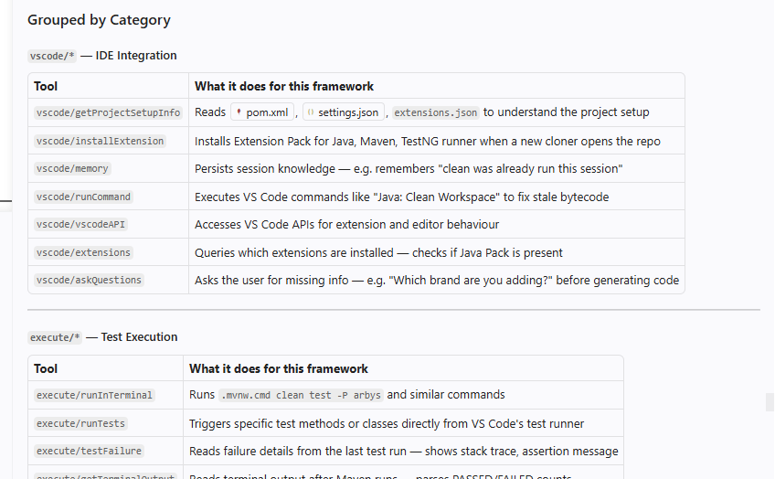

name — agent identifier in pickerdescription — shown in the agent listtools — explicit tool permissions listargument-hint — prompt hint for usersinstallExtension — auto-install Java Pack on clonememory — remember "clean already ran"runCommand — "Java: Clean Workspace"askQuestions — "Which brand to add?"runInTerminal — .\mvnw.cmd clean testrunTests — trigger ▶ button per testtestFailure — read stack tracesgetTerminalOutput — parse PASSED/FAILEDkillTerminal — stop hung Maven buildsreadFile — read any Java/XML/propertiesproblems — see compile errors firstterminalLastCommand — was clean already run?createFile — DunkinPage.java, DunkinTest.javaeditFiles — add case DUNKIN: to factorycreateDirectory — package directoriescodebase — "where is cookie handled?"textSearch — find all text() locators to fixusages — who calls isVisibleAfterWait()?changes — git diff since last runweb/fetch — inspect live page DOM for new locatorsbrowser/openBrowserPage — open Extent reportagent/runSubagent — delegate complex exploration without cluttering chat
| Section | What It Contains | Why It Matters |
|---|---|---|
| MANDATORY Rules ×3 | clean test, cookie banner, 5 XPath rules |
Prevents the most common failures before they happen |
| Project Structure | Full file tree with inline ← annotations | Agent edits the right file, never guesses |
| Brands Table | 7 brands with enum, URL slug, properties file | Correct names & paths generated for all brands |
| Test Case Conventions | TC prefix map, naming pattern, valid groups | Consistent TC IDs without duplicating a registry |
| Design Patterns & SOLID | 9 patterns mapped to exact classes | New code follows the same architecture automatically |
| Add New Brand (4 Steps) | Copy-paste ready code for each step | New brand in <5 minutes — zero existing file changes |
| Pitfalls P-01 to P-10 | Root cause + fix for every hard-won bug | No developer rediscovers the same issue twice |
| Agent Behaviour Rules | 10 numbered constraints for code generation | Same quality output from every developer, every time |

Ctrl+Shift+I or click the Copilot icon in the sidebar@ or click the "Agent" button at the bottom of the chat panelInspire-Franchise-Selenium-Automation-Framework-Agent from the dropdown — note the "Workspace" label"Add Baskin Robbins brand to this framework"BaskinRobbinsPage.java with correct @FindByBrandPageFactory case BASKIN_ROBBINSBaskinRobbinsTest.java extending AbstractBrandTesttestng-baskin-robbins.xml
.\mvnw.cmd clean test -P baskin-robbins -Dgroups=smoke automatically and verifies all TC-B tests pass for the new brand.agent.md file lives in .github/agents/, committed to Git — every team member who clones the repo gets the same expert-level Copilot experience immediately.